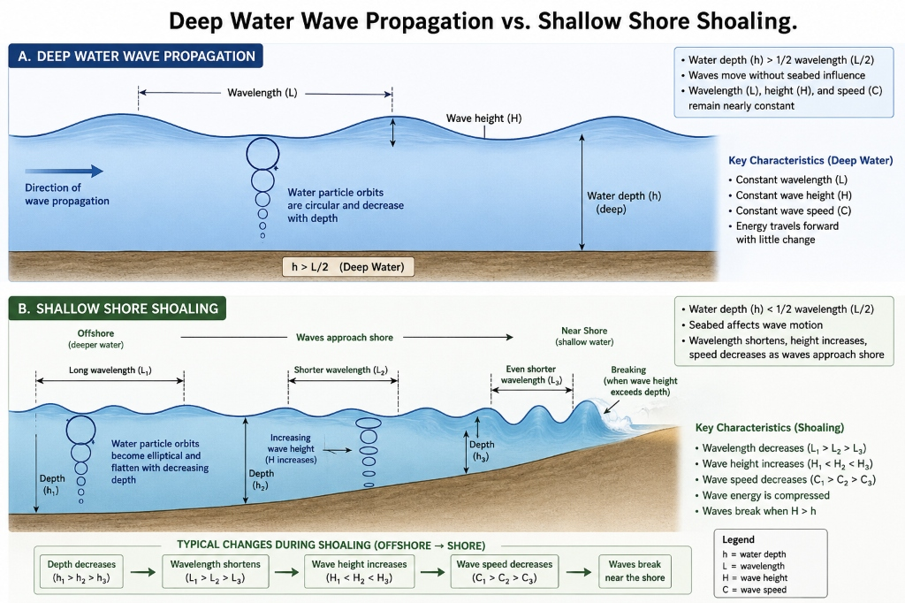

An interactive learning sequence to master skimming, scanning, and analytical comprehension for the Part A English Assessment.
Modeling Goal: Show how to scan for topic details and decode parenthetical definitions.
A tsunami is a series of giant, fast-moving ocean waves. Tsunami is a Japanese word. It means 'harbour wave'. These waves are caused by a sudden displacement (movement out of place) of water. Normal waves are made by wind, but tsunamis are different. They are triggered by underwater events. These include volcanic eruptions, landslides, or submarine earthquakes.
Q1 (Topic): The text is about tsunamis, explaining their causes and effects.
Q2 (Fact): Tsunamis are triggered by underwater disturbances like landslides or volcanic eruptions.
Click the underlined text to analyze the language feature.
Read the paragraph aloud. Point out that the author uses a parenthetical definition next to 'displacement' to support the reader's vocabulary.
Modeling Goal: Trace cause-and-effect structures and cohesive markers.
Most tsunamis start with undersea earthquakes. These happen along tectonic plate boundaries. The plates suddenly break or slip, which releases seismic (earth-shaking) energy. The sea floor pushes up or down, lifting the water column above it. The water shifts and makes powerful waves. The waves spread out in all directions.
Main Idea: Undersea earthquakes are the primary trigger for tsunamis.
Supporting Detail: Tectonic plates slip, releasing energy that pushes the ocean floor and lifts the water column.
Click the underlined text to analyze the language feature.
Show how a chain of actions creates the tsunami: plates slip -> energy released -> sea floor moves -> water column lifted -> waves spread.
Modeling Goal: Explore how the author addresses the audience and establishes scientific purpose.
In the deep ocean, tsunamis travel very fast. They can go over 800 kilometres per hour. However, the deep waves are not very high. They are often less than one metre tall. Ships at sea might not notice them. This travel is called wave propagation (how waves move in deep water).
Q4 (Audience): Students and general readers interested in earth science.
Q5 (Purpose): To explain the surprising science of wave dynamics, showing that tsunamis are almost invisible in deep water.
Click the underlined segments to analyze features.
Discuss the contrast word 'However'. It marks a transition to a surprising detail (very fast waves that are extremely low in height).
Modeling Goal: Identify structural features and cohesion.
The waves slow down as they reach shallow water. They drop to about 50 kilometres per hour. But the water piles up, causing the waves to grow very tall. This dramatic growth is called wave shoaling (compressing and rising near land). The water might suddenly pull back from the beach. Then, a massive wall of water hits the shore.

Q6 (Text Type): Information report. Structural features include technical headings, factual vocabulary, and process sequencing.
Q7 (Cohesion): Connectives like 'But', 'As', and 'Then' sequence the steps of the wave hitting the shore.
Click the underlined segments to analyze features.
Highlight how temporal connectives like 'Then' establish chronological order in natural disaster events, preparing the reader for the climax of the wave impact.
Modeling Goal: Evaluate language choices and how comparison tables multiply meaning.
When the waves reach land, they cause severe inundation (extreme flooding). Tsunamis strip away sand, destroy buildings, and wash away cars.
| Feature | Deep Ocean | Shallow Shore |
|---|---|---|
| Wave Speed | Exceeds 800 km/h | Drops to 50 km/h |
| Wave Height | Less than 1 metre | Grows up to 30 m |
Q8 (Language): Action verbs ('strip', 'destroy', 'wash') create vivid descriptions of destruction.
Q9 (Visual Feature): The comparison table maps deep vs. shallow wave speed and height, making data easy to scan and compare.
Click the underlined text to analyze language.
Explain how the table acts as a visual organizer. Instead of reading two separate paragraphs of numbers, the reader can scan across the rows to compare speeds and heights immediately.
With your helper, click the correct parts of our tsunami website mockup!
Select a slide to see accompanying pedagogical notes and teaching tips.